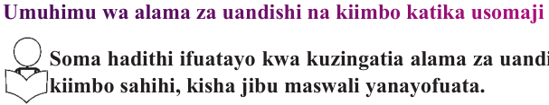
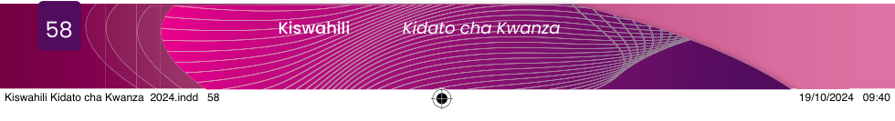

Msomaji akiwa na ufahamu juu ya jambo fulani anaweza kutoa taarifa yake kwa muhtasari, kwa kuzungumza au kwa kuandika. Katika kusoma kwa ufahamu, msomaji anapaswa kufahamu matini anayoisoma inahusu nini, yaani mawazo makuu yanayoelezwa. Aidha, msomaji anapaswa kubaini maneno mapya yaliyotumika katika matini aliyoisoma na namna yalivyotumika. Kufanya hivyo, kutamsaidia kutambua lengo la mwandishi.
Hivyo, ili kusoma kwa ufasaha na ufahamu, msomaji anatakiwa kuwa makini kwa kuelekeza fikra zake katika kile anachokisoma ili aweze kupata uelewa wa kina katika kila anachokisoma. Kusoma kwa ufasaha na ufahamu ni muhimu sana katika maisha yetu ya kila siku kwa kuwa hutuwezesha kukuza uelewa wa mambo mbalimbali na stadi za kuzungumza na kuandika. Vilevile, hukuza uwezo wa kujenga hoja juu ya mambo mbalimbali na kujieleza kwa ufasaha na kwa ufupi. Aidha, hukuza uwezo wa kuchambua mambo anuai na kuchochea ari ya kujisomea.
Zoezi la 5.1
Umuhimu wa alama za uandishi na kiimbo katika usomaji

Soma hadithi ifuatayo kwa kuzingatia alama za uandishi, kasi stahiki na kiimbo sahihi, kisha jibu maswali yanayofuata.
Bota ni mtoto wa kiume katika familia ya Mzee Bure aliyezaliwa na kulelewa katika mazingira ya kijijini. Baada ya kuhitimu elimu ya msingi, hakubahatika kuchaguliwa kuendelea na elimu ya sekondari kwa kuwa hakufanya vizuri katika mitihani yake. Suse, mama yake Bota, alimshauri mumewe wampeleke kijana wao katika shule binafsi ili aweze kupata elimu ya sekondari. Bure alionesha kusita kwa kuwa hakuwa na uwezo mzuri wa kifedha. Hata hivyo, kutokana na ushawishi wa mkewe, alikubali ushauri huo na akauza ng’ombe mmoja aliyekuwa naye kisha akampeleka mtoto wake shuleni.
Kutokana na hali ya uchumi kuwa ngumu, wakati mwingine Bota alichelewa kwenda shuleni kwa sababu ya kukosa ada. Mama yake aliumizwa sana na hali hiyo; hivyo, akaamua kuanzisha biashara ya kuchuuza samaki. Aliuza samaki hao kwa kubadilishana na mazao kisha akauza mazao hayo na kujipatia fedha. Kila faida aliyoipata aliielekeza katika kumsomesha Bota. Baba yake pia alijitahidi kufanya kazi zake kwa bidii
